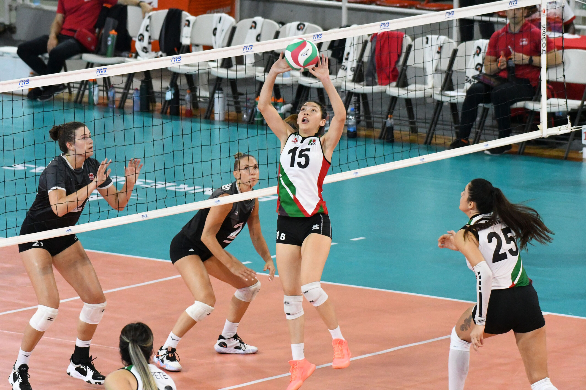
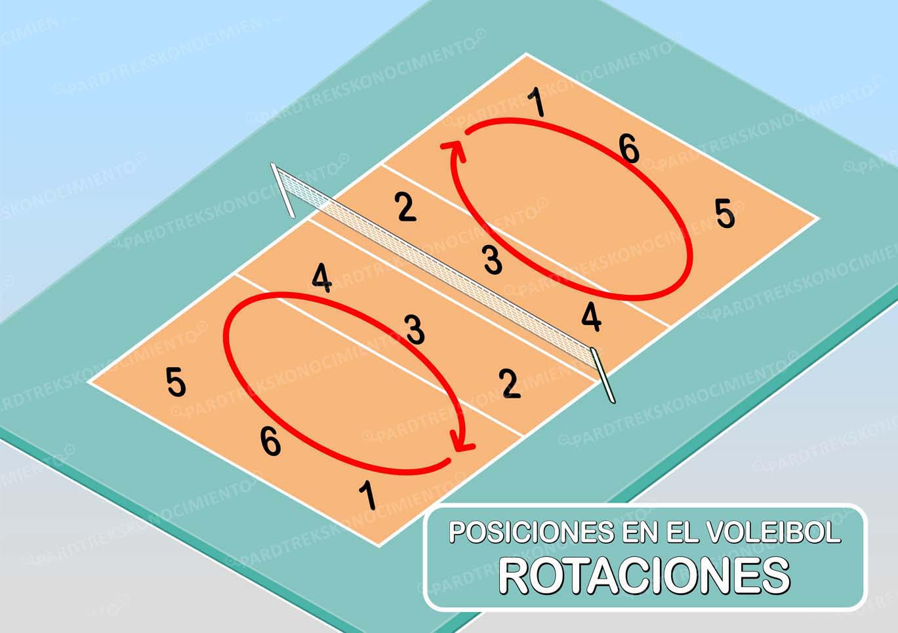
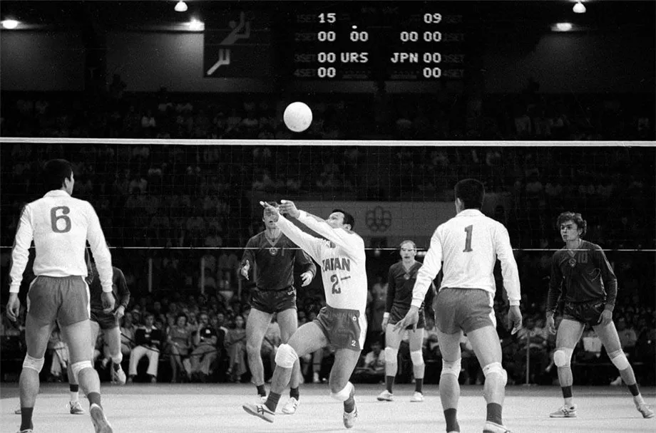

| --INICIO-- |
--Beneficios-- |
-- Calentamiento -- |
-- Futbol -- |
-- voleibol-- |
-- boxeo -- |
Voleibol
El voleibol es un deporte que se juega en equipos de seis personas. Los equipos están separados por una gran red. El objetivo del juego es mantener la pelota en el aire usando cualquier parte del cuerpo, con un máximo de tres golpes por equipo antes de pasarla al otro lado de la red. Si en algún momento la pelota toca el piso, es un punto en contra del equipo que la dejó caer.
El objetivo del juego es mandar la pelota sobre la red de tal manera que el equipo contrario no pueda hacer una devolución. Esto se debe hacer sin hacer faltas. Las principales causas de falta son: agarrar, llevar o levantar con la palma de la mano, cuatro toques seguidos de la pelota de un equipo y dos toques seguidos de un jugador.

Puntajes
La puntuación es de a un punto a la vez cuando termine un peloteo o se cometa un error. Un juego reglamentario se juega a 25 puntos y los ganadores deben tener una ventaja de 2 puntos.
Medidas de la cancha
La cancha mide 18 metros por 9 metros. La red se estira justo en la mitad de la cancha. La altura de la red está entre los 2,24 metros y los 2,43 metros.

Reglas del voleibol
Los seis jugadores de un equipo de voleibol comprenden tres atacantes, que están cerca de la red, y tres defensores.
El jugador que comienza sirviendo se sitúa detrás de los tres jugadores de la derecha de la línea trasera de su campo y sirve por encima de la red al campo contrario, lanzando la pelota al aire y golpeándola con su mano o muñeca.
Golpeando la pelota atrás y adelante por encima de la red, con las manos, muñecas, antebrazos, cabeza, o cualquier parte del cuerpo por encima de la cintura, el juego continúa hasta que un equipo falle, es decir, no devuelva la pelota o cometa una violación de las reglas.
En el servicio sólo está permitido un intento.
La pelota debe ser devuelta por uno de los equipos por encima de la red después de un máximo de tres toques y ningún jugador puede golpear la pelota dos veces sucesivas.
La devolución sobre la red debe hacerse sin agarrar, empujar o sujetar la pelota, sin que ningún jugador toque la red y sin entrar en el espacio del equipo rival.
Sólo puede anotar un punto el equipo que está sirviendo; un jugador tiene el servicio mientras su equipo anote puntos; en caso contrario, el privilegio de servir cambia al otro equipo.
En un cambio de saque todos los miembros del equipo que le toca servir rotan una posición moviéndose a favor de las agujas del reloj, pasando el jugador que estaba en la posición delantera derecha a la parte trasera derecha o posición de servicio.
El primer equipo que anote quince puntos gana el set, siempre que la diferencia sea de al menos dos puntos. Un partido de voleibol se juega al mejor de cinco sets. Si hay empate a catorce puntos, se continúa jugando hasta que un equipo saque dos puntos de ventaja.
Fundamentos del voleibol
Los fundamentos del voleibol se refiere a las diferentes técnicas motrices que se ejecutan para golpear e impulsar la pelota durante las diversas acciones de juego.
Saque o servicio: se inicia en cada jugada por detrás de la línea de fondo. Como estrategia va dirigido al punto débil del equipo contrario.
Ataque: tiene como fin interceptar cualquier balón del equipo contrario. Se trata de saltar junto a la red con los brazos alzados para devolver el balón al campo contrario, o estrecharle el campo de ataque para buscar que el balón quede fuera de juego. En el bloqueo pueden participar tres jugadores.
Recepción: controlar el balón para entregarlo al compañero para que este pueda jugarlo.
Colocación: al jugador que le corresponde hacer el segundo toque debe poner el balón en perfectas condiciones para que el tercer jugador pueda rematarlo en el campo contrario. Los remates tienen como fin ir dirigidos a las zonas mal defendidas e ir con velocidad para que el jugador contrario no lo pueda controlar.
Golpe de antebrazos: se colocan los antebrazos a la altura de la cintura para recibir y golpear los balones bajos a fin de hacer un buen pase al compañero de juego o evitar que el balón toque el suelo, de esta manera el balón puede volver a tomar altura y una mejor dirección.
Golpe de dedos: es un golpe preciso que se emplea para realizar pases entre compañeros o para pasar la pelota al otro lado de la red. En este caso se reciben las pelotas altas con los dedos lo que permite darle mayor precisión y dirección.
Remate: se trata de devolver la pelota al lado contrario con gran fuerza y de manera inesperada para los contrincantes, a fin de lograr anotar un punto.
Posiciones y rotaciones
Tres jugadores delanteros se ubican al frente de la red en la zona de ataque y tres en la zona de defensa, que son los zagueros y el líbero, en la parte de atrás de la cancha.
Se considera falta la posición incorrecta por parte de los jugadores en el momento del saque. También si un jugador pisa la cancha contraria por debajo de la red interfiriendo con las jugadas del otro equipo.
Los jugadores no deben tocar los espacios del equipo contrario, esto es considerado como falta.
En el caso, de que un equipo le arrebate el saque al otro, los jugadores, menos el líbero, deben de rotarse de posición en el sentido de las agujas del reloj.

Historia del voleibol
El voleibol es un juego deportivo creado por William George Morgan en el año 1895, cuando este se desempeñaba como profesor y entrenador deportivo en la YMCA (Asociación Cristiana de Jóvenes) de Holyoke, Massachusetts (Estados Unidos).
Morgan se vio en la necesidad de crear una actividad física alternativa y de menor intensidad que el baloncesto, deporte creado por su compañero James Naismith en 1891, el cual pudiese ser practicado tanto por jóvenes como por personas adultas en espacios cerrados o abiertos. De esta manera nació el voleibol bajo el nombre de mintonette.
Para su creación Morgan tomó en cuenta todas las técnicas deportivas que él ya conocía y ponía en práctica con sus alumnos, su finalidad era crear un juego por equipos para entrenar y competir, por tanto estableció tanto sus primeras reglas como los elementos del juego.
En el año 1896 Morgan realizó la primera presentación pública del voleibol en una conferencia de las diversas asociaciones YMCA. Desde ese momento el voleibol consiguió gran receptividad y comenzó a expandirse por diversos países.
En principio el voleibol era un deporte practicado exclusivamente por hombres, pero al pasar los años también se incluyó el voleibol femenino.
En la actualidad el voleibol es un deporte que cuenta con un organismo de carácter internacional fundado en el año 1947, la Federación Internacional de Voleibol (FIVB). Es el lugar donde se definen sus reglamentos y organizan las diversas actividades en torno a este deporte.
Los primeros campeonatos mundiales se organizaron en 1949 para la categoría masculina, y en 1952 para la categoría femenina. El voleibol de playa se incorporó a la FIVB en el año 1986 y a los Juegos Olímpicos en 1996.
